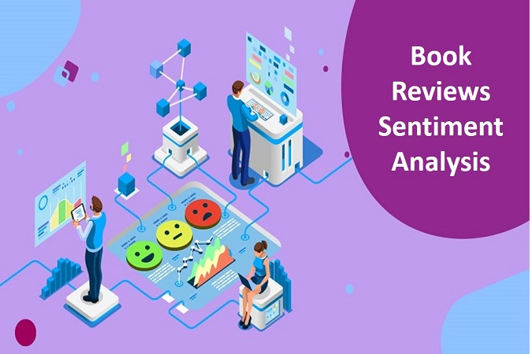

In this challenge, as a data scientist of a bank, I was asked to analyze the past data and predict whether the customer will churn or not in the next 6 months.
This would help the bank to have the right engagement with customers at the right time.
Objective is to build a machine learning model to predict whether the customer will churn or not in the next six months.

Sentiment analysis is the process of determining the opinion, reviews or feeling expressed as either positive, negative or neutral.
Capturing the exact sentiment of a review through text is a challenging task.
In this project I explored various techniques to extract the sentiment of each review.

In this project, I performed an unsupervised clustering for Customer Segmentation.
I have finalized 4 clusters for the given dataset based on K-Means Clustering. Generated characteristics of each cluster such as demographic, purchasing habits and behavior.
Customer segmentation is the process of dividing customers into groups based on common characteristics.
Segmentation allows marketers to better tailor their marketing efforts to various audience subsets.
This dashboard contains information regarding the property Insights in Boston Area.

In this project I have used SQL Server for answering queries and Tableau to visualize performance of a Retail Store.

For this project I developed a Used Car Price Prediction system which can effectively determines the price of a vehicle using various features.
I used a Regression Algorithms which can provide us with a continuous value as recommended selling price.